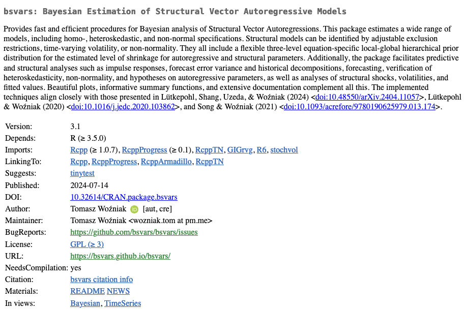
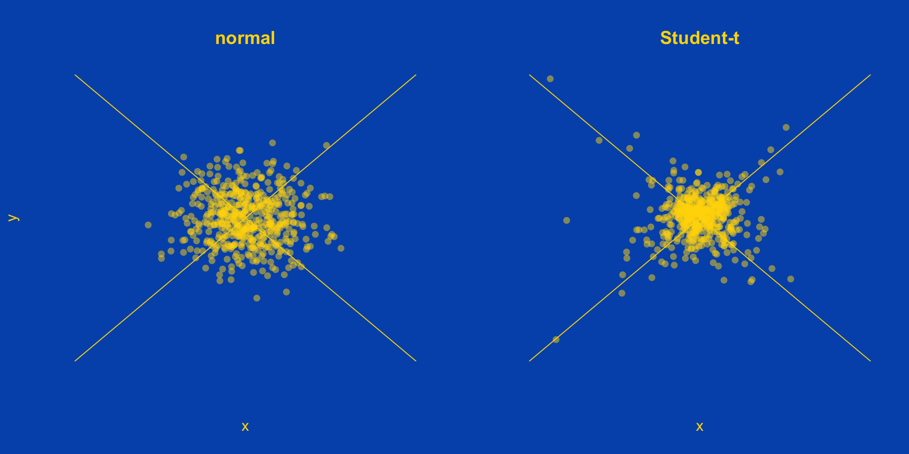
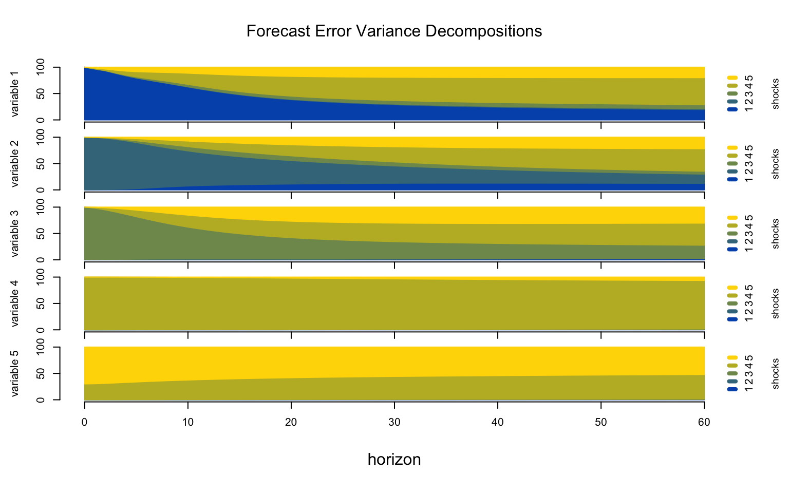
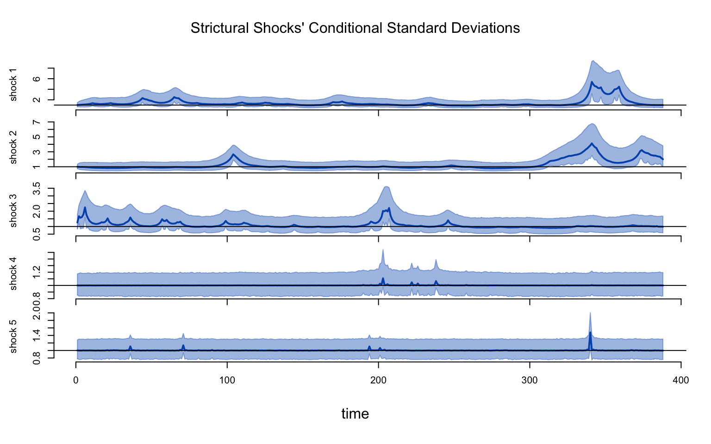
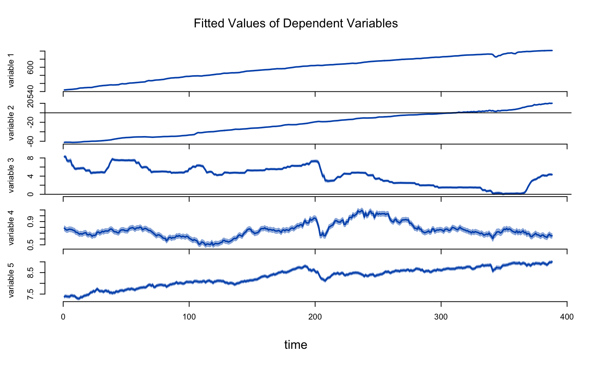
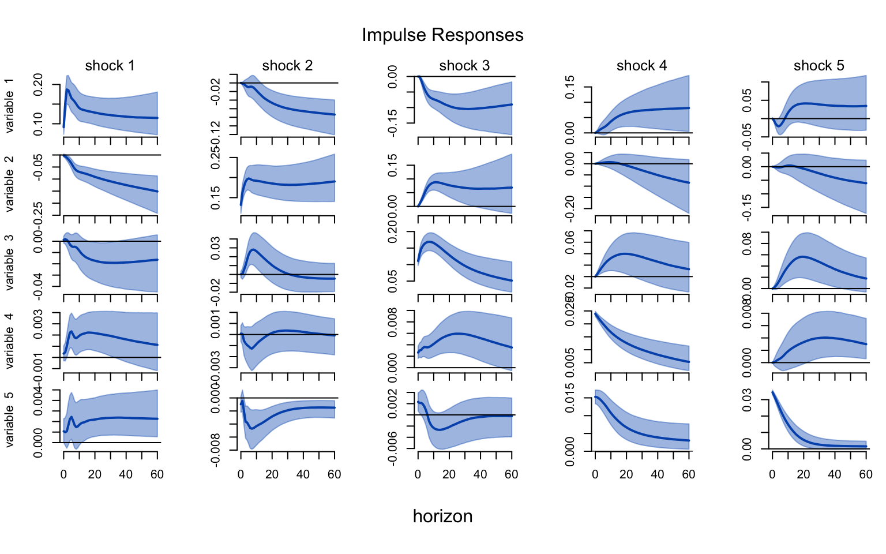
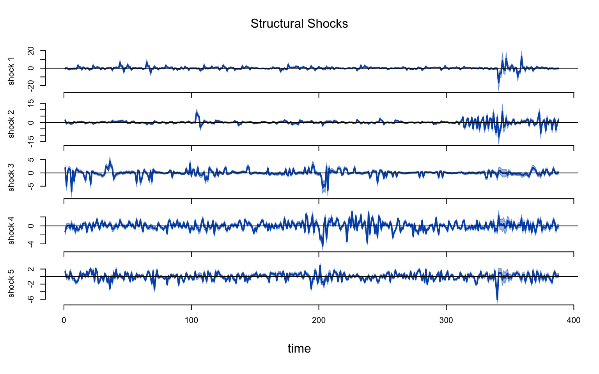
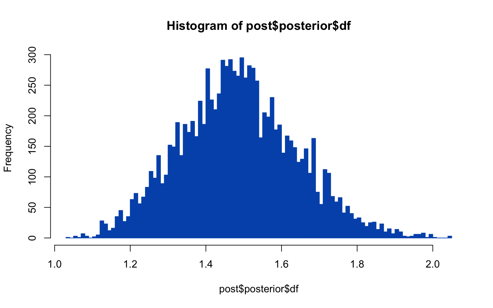
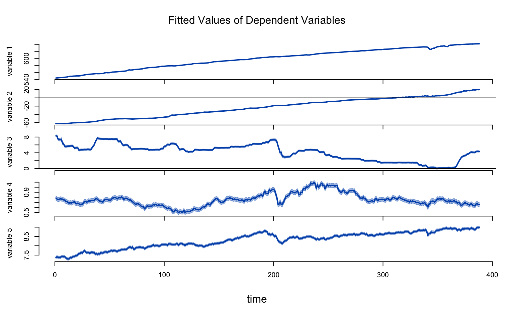

library(bsvars)
data(us_fiscal_lsuw)\[ \]
\[ \]
bsvars package features
bsvars models and identification
bsvars modeling of monetary policy
\[ \]
Slides as a Website
GitHub repo to reproduce the slides and results
R script to reproduce empirical results
\[ \]
bsvars on CRAN
bsvars.github.io/bsvars/
bsvars.github.io
bsvars package features

bsvars package features
\[ \]
- Bayesian estimation of Structural VARs
- 5 volatility & 3 non-normal models for shocks
- identification using
- exclusion restrictions
- heteroskedasticity
- and non-normality
- efficient and fast Gibbs samplers
bsvars package features
\[ \]
- excellent computational speed
- frontier econometric techniques
- compiled code using cpp via Rcpp and RcppArmadillo
- data analysis in R
bsvars package features
\[ \]
- package and data loading
- simple model setup
- simple estimation
bsvars package features
\[ \]
- structural analyses
- predictive analyses
- plots and summaries
bsvars package features
\[ \]
- workflow with the pipe
library(bsvars)
data(us_fiscal_lsuw)
us_fiscal_lsuw |>
specify_bsvar$new() |>
estimate(S = 1000) |>
estimate(S = 10000) -> post
post |> compute_impulse_responses(horizon = 12) -> plot()
post |> compute_variance_decompositions(horizon = 12) -> plot()
post |> compute_historical_decompositions() -> plot()
post |> compute_structural_shocks() -> plot()
post |> compute_conditional_sd() -> plot()
post |> forecast(horizon = 12) -> plot()
post |> verify_identification() -> summary()bsvars package features
\[ \]
- specify different models
spec1 = specify_bsvar$new(us_fiscal_lsuw, p = 4) # SVAR(4)
spec2 = specify_bsvar_sv$new(us_fiscal_lsuw) # SVAR(1)-SV
spec3 = specify_bsvar_t$new(us_fiscal_lsuw, p = 2) # SVAR(2)-t
spec4 = specify_bsvar_msh$new(us_fiscal_lsuw, M = 2) # SVAR(1)-MSH(2)
spec5 = specify_bsvar_msh$new(us_fiscal_lsuw, finiteM = FALSE) # SVAR(1)-MSH(Inf)
spec6 = specify_bsvar_mix$new(us_fiscal_lsuw, M = 2) # SVAR(1)-MIX(2)
spec7 = specify_bsvar_mix$new(us_fiscal_lsuw, finiteM = FALSE) # SVAR(1)-MIX(Inf)- from now on it’s the same, e.g.
bsvars package features
- progress bar

bsvars models and identification
bsvars models
\[ \]
Structural VAR
\[\begin{align} \text{reduced form:}&&\mathbf{y}_t &= \mathbf{A}_1\mathbf{y}_{t-1} + \dots + \mathbf{A}_p\mathbf{y}_{t-p} + \mathbf{A}_d\mathbf{d}_{t} + \boldsymbol{\varepsilon}_t \\ \text{structural form:}&&\mathbf{B}_0\boldsymbol{\varepsilon}_t &= \mathbf{u}_t \end{align}\]
- system modelling of dependent variables \(\mathbf{y}_t\)
- system dynamics captured by modeling effects of lags \(\mathbf{y}_{t-1},\dots,\mathbf{y}_{t-p}\)
- deterministic terms and exogenous variables \(\mathbf{d}_{t}\)
- economic structure introduced by structural matrix \(\mathbf{B}_0\)
- well-isolated structural shocks \(\mathbf{u}_t\)
bsvars models
\[ \]
Structural VAR
\[\begin{align} \text{reduced form:}&&\mathbf{y}_t &= \mathbf{A}\mathbf{x}_t + \boldsymbol{\varepsilon}_t \\ \text{structural form:}&&\mathbf{B}_0\boldsymbol{\varepsilon}_t &= \mathbf{u}_t \\ \text{structural shocks:}&&\mathbf{u}_t\mid\mathbf{x}_t &\sim N\left( \mathbf{0}_N, \text{diag}\left(\boldsymbol{\sigma}_t^2\right) \right) \end{align}\]
- interpretable structural specification
- identification through
- exclusion restrictions
- heteroskedasticity
- non-normality
- facilitates application of frontier numerical techniques
bsvars models
Reduced form hierarchical prior
\[\begin{align} \text{autoregressive slopes:}&& [\mathbf{A}]_{n\cdot}'\mid\gamma_{A.n} &\sim N_{Np+1}\left( \underline{\mathbf{m}}_{n.A}, \gamma_{A.n}\underline{\Omega}_A \right) \\ \text{autoregressive shrinkage:}&&\gamma_{A.n} | s_{A.n} &\sim IG2\left(s_{A.n}, \underline{\nu}_A\right)\\ \text{local scale:}&&s_{A.n} | s_{A} &\sim G\left(s_{A}, \underline{a}_A\right)\\ \text{global scale:}&&s_{A} &\sim IG2\left(\underline{s}_{s_A}, \underline{\nu}_{s_A}\right) \end{align}\]
- Minnesota prior mean and shrinkage decay with increasing lags
- Flexibility in shrinkage and scale hyper-parameters
- 3-level equation-specific local-global hierarchical prior
bsvars models
Structural form hierarchical prior
\[\begin{align} \text{exclusion restrictions:}&& [\mathbf{B}_0]_{n\cdot} &= \mathbf{b}_n\mathbf{V}_n\\ \text{structural relations:}&& \mathbf{B}_0\mid\gamma_{B}&\sim |\det(\mathbf{B}_0)|^{\underline{\nu}_B - N}\exp\left\{-\frac{1}{2} \sum_{n=1}^{N} \gamma_{B.n}^{-1} \mathbf{b}_n\mathbf{b}_n' \right\} \\ \text{structural shrinkage:}&&\gamma_{B.n} | s_{B.n} &\sim IG2\left(s_{B.n}, \underline{\nu}_b\right)\\ \text{local scale:}&&s_{B.n} | s_{B} &\sim G\left(s_{B}, \underline{a}_B\right)\\ \text{global scale:}&&s_{B} &\sim IG2\left(\underline{s}_{s_B}, \underline{\nu}_{s_B}\right) \end{align}\]
- Highly adaptive equation-by-equation exclusion restrictions
- Likelihood-shape preserving prior
- Flexibility in shrinkage and scale hyper-parameters
- 3-level equation-specific local-global hierarchical prior
bsvars models
Volatility models
- Homoskedastic \(\sigma_{n.t}^2 = 1\)
- Stochastic Volatility: non-centred and centred
- Stationary Markov-switching heteroskedastisity
- Sparse Markov-switching heteroskedastisity
Non-normal models
- Student-t shocks
- Finite mixture of normal components
- Sparse mixture of normal components
bsvars models
\[ \]
Non-centred Stochastic Volatility
\[\begin{align} \text{conditional variance:}&&\sigma_{n.t}^2 &= \exp\left\{\omega_n h_{n.t}\right\}\\ \text{log-volatility:}&&h_{n.t} &= \rho_n h_{n.t-1} + v_{n.t}\\ \text{volatility innovation:}&&v_{n.t}&\sim N\left(0,1\right)\\ \end{align}\]
- excellent volatility forecasting performance
- standardization around \(\sigma_{n.t}^2 = 1\)
- homoskedasticity verification by testing \(\omega_n = 0\)
bsvars models
\[ \]
Centred Stochastic Volatility
\[\begin{align} \text{conditional variance:}&&\sigma_{n.t}^2 &= \exp\left\{\tilde{h}_{n.t}\right\}\\ \text{log-volatility:}&&\tilde{h}_{n.t} &= \rho_n \tilde{h}_{n.t-1} + \tilde{v}_{n.t}\\ \text{volatility innovation:}&&\tilde{v}_{n.t}&\sim N\left(0,\sigma_v^2\right)\\ \end{align}\]
- excellent volatility forecasting performance
- weak standardisation
- no homoskedasticity verification available
bsvars models
Stochastic Volatility: conditional variance prior
bsvars identification (simplified)
\[\begin{align} &\\ \mathbf\Sigma &= \mathbf{B}_0^{-1}\mathbf{B}_0^{-1\prime}\\[1ex] \end{align}\]
- \(\mathbf\Sigma\) can be estimated using data easily
- The relationship presents a system of equations to be solved for \(\mathbf{B}_0\)
- \(\mathbf\Sigma\) is a symmetric \(N\times N\) matrix
- \(\mathbf\Sigma\) has \(N(N+1)/2\) unique elements (equations)
- \(\mathbf{B}_0\) is an \(N\times N\) matrix with \(N^2\) unique elements to estimate
- We cannot estimate all elements of \(\mathbf{B}_0\) using \(N(N+1)/2\) equations
- \(\mathbf{B}_0\) is
not identified
bsvars identification (simplified)
\[\begin{align} &\\ \mathbf\Sigma &= \mathbf{B}_0^{-1}\mathbf{B}_0^{-1\prime}\\[1ex] \end{align}\]
Identification.
- Only \(N(N+1)/2\) elements in \(\mathbf{B}_0\) can be estimated
- Impose \(N(N-1)/2\) restrictions on \(\mathbf{B}_0\) to solve the equation
- This identifies the rows of \(\mathbf{B}_0\) up to a sign
- Change the sign of any number of \(\mathbf{B}_0\) rows and \(\mathbf\Sigma\) will not change
- Often \(\mathbf{B}_0\) is made lower-triangular
bsvars identification (simplified)
Let \(N=2\)
\[\begin{align} \begin{bmatrix}\sigma_1^2&\sigma_{12}\\ \sigma_{12}&\sigma_2^2\end{bmatrix} &\qquad \begin{bmatrix}B_{0.11}&B_{0.12}\\ B_{0.21}&B_{0.22}\end{bmatrix}\\[1ex] \end{align}\]
- 3 unique elements in \(\mathbf\Sigma\) - 3 equations in the system
- 4 elements in \(\mathbf{B}_0\) cannot be estimated
Identification.
\[\begin{align} \begin{bmatrix}\sigma_1^2&\sigma_{12}\\ \sigma_{12}&\sigma_2^2\end{bmatrix} &\qquad \begin{bmatrix}B_{0.11}& 0\\ B_{0.21}&B_{0.22}\end{bmatrix}\\[1ex] \end{align}\]
- 3 equations identify 3 elements in \(\mathbf{B}_0\)
bsvars identification (simplified)
Identification through Heteroskedasticity.
Suppose that:
- there are two covariances, \(\mathbf\Sigma_1\) and \(\mathbf\Sigma_2\), associated with the sample
- matrix \(\mathbf{B}_0\) does not change over time
- structural shocks are heteroskedastic with covariances \(\text{diag}\left(\boldsymbol\sigma_1^2\right)\) and \(\text{diag}\left(\boldsymbol\sigma_2^2\right)\)
\[\begin{align} \mathbf\Sigma_1 &= \mathbf{B}_0^{-1}\text{diag}\left(\boldsymbol\sigma_1^2\right)\mathbf{B}_0^{-1\prime}\\[1ex] \mathbf\Sigma_2 &= \mathbf{B}_0^{-1}\text{diag}\left(\boldsymbol\sigma_2^2\right)\mathbf{B}_0^{-1\prime} \end{align}\]
bsvars identification (simplified)
Identification through Heteroskedasticity.
\[\begin{align} \mathbf\Sigma_1 &= \mathbf{B}_0^{-1}\text{diag}\left(\boldsymbol\sigma_1^2\right)\mathbf{B}_0^{-1\prime}\\[1ex] \mathbf\Sigma_2 &= \mathbf{B}_0^{-1}\text{diag}\left(\boldsymbol\sigma_2^2\right)\mathbf{B}_0^{-1\prime} \end{align}\]
Identification.
- \(\mathbf\Sigma_1\) and \(\mathbf\Sigma_2\) contain \(N^2+N\) unique elements
- All \(N^2\) elements of \(\mathbf{B}_0\) can be estimated
- Both \(N\)-vectors \(\boldsymbol\sigma_1^2\) and \(\boldsymbol\sigma_2^2\) can be estimated due to additional restriction: \(\boldsymbol\sigma_i^2 \approx \boldsymbol\imath_N\)
bsvars identification (simplified)
Identification through Heteroskedasticity.
The setup can be generalised to conditional heteroskedasticity of structural shocks
\[\begin{align} u_t |Y_{t-1} &\sim N_N\left(\mathbf{0}_N, \text{diag}\left(\boldsymbol\sigma_t^2\right)\right)\\[1ex] \mathbf\Sigma_t &= \mathbf{B}_0^{-1}\text{diag}\left(\boldsymbol\sigma_t^2\right)\mathbf{B}_0^{-1\prime} \end{align}\]
Identification.
- Matrix \(\mathbf{B}_0\) is identified up to its rows’ sign change and equations’ reordering
- shocks are identified if changes in their conditional variances are non-proportional
- Structural shocks’ conditional variances \(\boldsymbol\sigma_t^2\) can be estimated
- Choose any (conditional) variance model for \(\boldsymbol\sigma_t^2\) that fits the data well.
bsvars identification (simplified)
Identification through Non-normality.
\[\begin{align} \text{structural shocks:}&&\mathbf{u}_t\mid\mathbf{x}_t &\sim t\left( \mathbf{0}_N, \mathbf{I}_N, \nu \right) \end{align}\]
- \(\nu\) - the degrees of freedom parameter is estimated
- fat tails provide identification information
- potential gains in forecasting precision
- robustness to outliers
- verify identification by checking \(\nu \rightarrow\infty\)
bsvars identification (simplified)
Identification through Non-normality.
bsvars identification verification
\[ \]
Savage-Dickey Density Ratio.
Verify the restriction through the posterior odds ratio using the SDDR: \[ SDDR = \frac{\Pr[H_0 | data]}{\Pr[H_1 | data]}= \frac{p(H_0 | data)}{p(H_0 )} \]
- suitable to verify sharp restrictions on parameters
- is interpreted as posterior odds ratio
- values greater than 1 provide evidence in favor of the restriction
- simple to compute given the unrestricted model estimation output
bsvars identification verification
…in non-centred Stochastic Volatility.
A structural shock is homoskedastic if \[ H_0:\quad\omega_n = 0 \]
\[ \]
- if \(\omega_n = 0\) the shock is homoskedastic with \(\sigma_{nt}^2 = 1\)
- the only homoskedastic shock in the system is identified
- two or more homoskedastic shocks have not identified through heteroskedasticity
- heteroskedastic shocks are identified with probability 1
- use the
verify_identification()function
bsvars identification verification
…in t-distributed shocks model.
A structural shock is homoskedastic if \[ H_0:\quad\nu \rightarrow\infty \]
\[ \]
- if \(\nu \rightarrow\infty\) all the shocks are normal
- when \(\nu\) is finite and less than 30, the shocks are leptokurtic
- then all the shocks are identified through non-normality
- SDDR derivations and computation require some fancy stats
- use the
verify_identification()function
bsvars hypothesis verification
…for autoregressive parameters.
A structural shock is homoskedastic if \[ H_0:\quad\mathbf{S}\text{vec}(\mathbf{A}) = \mathbf{r} \]
\[ \]
- verify restrictions on the autoregressive parameters
- can be used, e.g., to verify Granger causality
- use the
verify_autoregression()function
bsvars modeling of monetary policy
bsvars modeling of monetary policy
Domestic economy.
Consider a system of five domestic variables:
\[\begin{align} y_t = \begin{bmatrix} rgdp_t & cpi_t & CR_t & EX_t & aord_t \end{bmatrix}' \end{align}\]
\(rgdp_t\) - log real Gross Domestic Product
\(cpi_t\) - log Consumer Price Index
\(CR_t\) - Cash Rate Target - Australian nominal interest rate
\(EX_t\) - USD/AUD exchange rate
\(aord_t\) - log All Ordinaries Index
monthly data from August 1990 to March 2024
quarterly variables interpolated to monthly frequency
bsvars modeling of monetary policy
Foreign sector.
The foreign sector includes three US variables:
- \(rgdp_t^{(US)}\) - log real Gross Domestic Product
- \(cpi_t^{(US)}\) - log Consumer Price Index
- \(FFR_t\) - Cash Rate Target - Australian nominal interest rate
- monthly data from August 1990 to March 2024
- quarterly variables interpolated to monthly frequency
- contemporaneous and four lagged values are included in the model as exogenous variables
bsvars modeling of monetary policy
Lower-triangular system.
\[\begin{align} \begin{bmatrix} B_{0.11}&0&0&0&0\\ B_{0.21}&B_{0.22}&0&0&0\\ B_{0.31}&B_{0.32}&B_{0.33}&0&0\\ B_{0.41}&B_{0.42}&B_{0.43}&B_{0.44}&0\\ B_{0.51}&B_{0.52}&B_{0.53}&B_{0.54}&B_{0.55} \end{bmatrix} \begin{bmatrix}rgdp_t \\ cpi_t \\ CR_t \\ EX_t\\ aord_t \end{bmatrix} &= \dots + \begin{bmatrix} u_t^{ad} \\ u_t^{as} \\ u_t^{mps} \\ u_t^{ex} \\ u_t^{aord} \end{bmatrix} \end{align}\]
Identified shocks.
- \(u_t^{mps}\) - monetary policy shock identified via Taylor’s Rule
- \(u_t^{ex}\) - currency shock
bsvars modeling of monetary policy
Specify and estimate a lower-triangular SVAR-SV.
library(bsvars)
load("soe.rda")
soe = as.matrix(soe)
TT = nrow(soe)
lag_order = 8
lag_exogenous = 4
T = TT - max(lag_order, lag_exogenous)
exogenous = matrix(NA, TT - lag_exogenous, 0)
for (i in 0:lag_exogenous) {
exogenous = cbind(exogenous, as.matrix(soe[(lag_exogenous - i + 1):(TT - i), 6:8]))
}
set.seed(1234)
spec = specify_bsvar_sv$new(
data = tail(soe[,1:5], T),
p = lag_order,
exogenous = tail(exogenous, T)
)
burn = estimate(spec, 1e4)
post = estimate(burn, 1e4)bsvars modeling of monetary policy
SVAR-SV: Compute and plot impulse responses.

bsvars modeling of monetary policy
SVAR-SV: Forecast error variance decompositions.
bsvars modeling of monetary policy
SVAR-SV: Structural shocks.

bsvars modeling of monetary policy
SVAR-SV: Shocks’ conditional standard deviations.
bsvars modeling of monetary policy
SVAR-SV: Homoskedasticity verification.
**************************************************|
bsvars: Bayesian Structural Vector Autoregressions|
**************************************************|
Summary of identification verification |
H0: omega_n = 0 [homoskedasticity] |
H1: omega_n != 0 [heteroskedasticity] |
**************************************************| log(SDDR) NSE Pr[H0|data] Pr[H1|data]
shock 1 -139.2079238 56.216891 3.489529e-61 1.0000000
shock 2 -77.3369956 60.430724 2.588031e-34 1.0000000
shock 3 -20.9795368 20.576286 7.739322e-10 1.0000000
shock 4 -0.2618337 0.524091 4.349130e-01 0.5650870
shock 5 -2.5202529 1.911860 7.445051e-02 0.9255495bsvars modeling of monetary policy
SVAR-SV: Fitted Values.
bsvars modeling of monetary policy
SVAR-SV: Does foreign sector matter?
**************************************************|
bsvars: Bayesian Structural Vector Autoregressions|
**************************************************|
Summary of hypothesis verification |
for autoregressive parameters |
**************************************************| log(SDDR) NSE Pr[H0|data] Pr[H1|data]
156.8253 4.668342 1 7.791643e-69bsvars modeling of monetary policy
Specify and estimate a lower-triangular SVAR-t.
bsvars modeling of monetary policy
SVAR-t: Compute and plot impulse responses.
bsvars modeling of monetary policy
SVAR-t: Forecast error variance decompositions.
bsvars modeling of monetary policy
SVAR-t: Structural shocks.
bsvars modeling of monetary policy
SVAR-t: Normality verification.
**************************************************|
bsvars: Bayesian Structural Vector Autoregressions|
**************************************************|
Summary of identification verification |
H0: omega_n = 0 [homoskedasticity] |
H1: omega_n != 0 [heteroskedasticity] |
**************************************************| log(SDDR) NSE Pr[H0|data] Pr[H1|data]
shock 1 -139.2066904 56.2061755 3.493836e-61 1.0000000
shock 2 -77.3357623 60.4382345 2.591225e-34 1.0000000
shock 3 -20.9783035 20.5683812 7.748873e-10 1.0000000
shock 4 -0.2606003 0.5270637 4.352162e-01 0.5647838
shock 5 -2.5190196 1.9091024 7.453555e-02 0.9254645bsvars modeling of monetary policy
SVAR-t: Degrees-of-freedom posterior density.
bsvars modeling of monetary policy
SVAR-t: Fitted Values.
